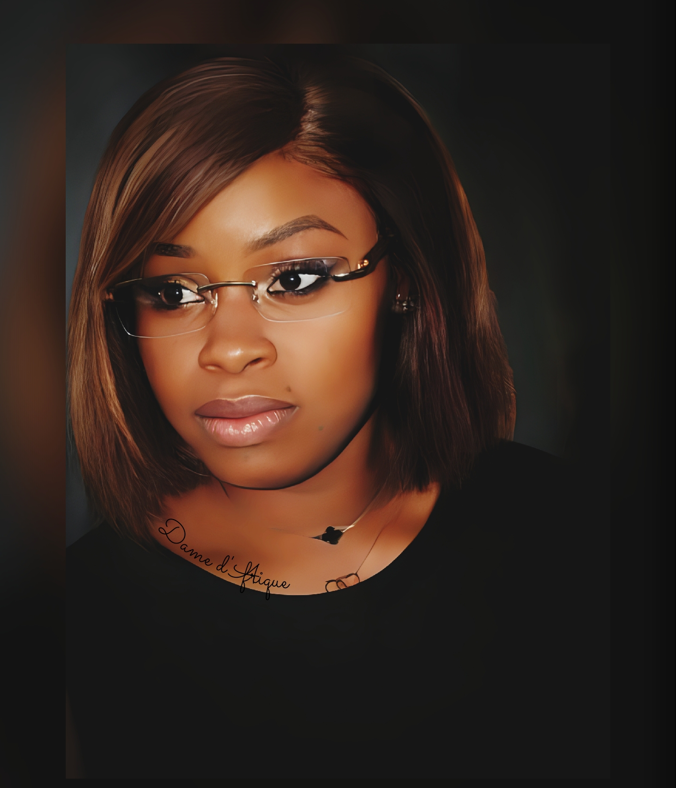

🎬 Portrait de Dame d'Afrique – L'étoile montante qui illumine le cinéma camerounais
Nom complet : Mvogo Estelle Michelle
Date de naissance : 8 avril 1993
Nationalité : Camerounaise
Première apparition : Série "Héritiers" (2025), produite par Planète Africa
Elle se fait appeler Dame d'Afrique, un pseudonyme qui résonne déjà comme une promesse d'engagement et d'authenticité. Originaire de Yaoundé, Mvogo Estelle Michelle est l'une de ces femmes qui prouvent qu'il n'y a pas d'âge pour suivre ses rêves. À 32 ans, elle s'impose avec détermination dans l'univers exigeant du cinéma africain.
🌟 Une vocation tardive assumée
Contrairement à beaucoup, son entrée dans le monde du cinéma ne s'est pas faite dès l'adolescence. Longtemps restée discrète, Estelle Michelle a préféré observer, apprendre, analyser les rouages du milieu artistique avant de s'y engager. 2025 marque un tournant décisif : elle décroche son premier rôle dans la série à succès Héritiers, un projet ambitieux signé Planète Africa et porté par le réalisateur Venceslas Guedbigué.
Dans cette série dramatique, elle campe le rôle complexe de Dr Morel Lucinda, Directrice Administrative et Financière de Bryden Global Cooperation. Un personnage stratégique, symbole de rigueur et d'intelligence féminine dans un univers professionnel souvent dominé par les hommes.
🎭 Un rôle fort et exigeant
Dr Morel Lucinda n'est pas qu'un simple personnage. Pour Dame d'Afrique, il incarne un idéal : celui d'une femme puissante, droite et respectée. Veillant au bon fonctionnement et à la croissance de Bryden Global, Lucinda est le bras financier et l'une des pièces maîtresses de l'entreprise, dans un climat tendu où les luttes de pouvoir se multiplient.
« Ce personnage est plus qu'un rôle. Il est une leçon de vie, un rappel que les femmes peuvent s'imposer dans tous les domaines par la compétence et l'intégrité », confie l'actrice.
🎬 Héritiers : au-delà du divertissement, un symbole
Pour Estelle Michelle, la série Héritiers dépasse le simple cadre du divertissement. C'est une œuvre engagée, reflet des réalités sociales et économiques africaines. Les intrigues, portées par des personnages profonds et une réalisation soignée, offrent au public camerounais et africain un regard sans complaisance sur le monde des affaires, du pouvoir et des héritages familiaux.
« Pour moi, Héritiers est la pièce unique manquante d'un puzzle en devenir dans le monde de l'art en général, et du cinéma en particulier », affirme-t-elle avec conviction.
💬 Transmettre des valeurs, son véritable combat
Au-delà de la fiction, Dame d'Afrique voit le cinéma comme un vecteur d'éducation et de transformation sociale. Son engagement artistique est motivé par une envie profonde : celle de redonner vie aux valeurs humaines.
« J'ai choisi ce métier pour transmettre des valeurs d'honneur qui sont presque inexistantes dans l'humanité actuelle », explique-t-elle.
Pour elle, le cinéma ne se limite pas à raconter des histoires, il permet d'interroger les consciences et de questionner les dérives d'une société en perte de repères.
🙏 Un message d'espoir aux jeunes
« Le rêve fait vivre, la détermination l'immortalise », lance-t-elle à l'attention des jeunes Camerounais et Africains.
Son parcours prouve que rien n'est figé. Avec du courage, de la discipline et une vision claire, chacun peut transformer son destin. À travers son personnage et son engagement personnel, Dame d'Afrique espère inspirer les femmes à croire en leurs talents et à occuper pleinement l'espace qui leur revient dans la société.